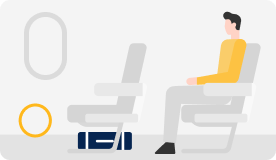

기내 휴대 / 위탁 수하물
기내휴대수화물은 승객이 직접 휴대하여 기내로 가져갈 수 있는 수하물입니다.
휴대 수하물 반입 규정
- 10kg 이내, 허용 가능한 가방 1개 (1인/1회)
- 가방 크기: 3변의 합이 115cm 이하 (55cm × 40cm × 20cm)
- 상기 조건에 맞는 경우 무료 반입 가능
무료 휴대 수하물 안내
추가 반입 가능한 물품
- ① 교통약자 보조 기구(휠체어, 의수, 의족 등의 보조 기구)
- ② 노트북 또는 태블릿 PC
- ③ 작은 핸드백 또는 서류 가방
- ④ 소량의 서적, 소량의 면세품, 외투 또는 모포, 소형
추가 휴대 가능 물품은 총합이 10kg을 넘지 않는
경우에 기내
반입 가능합니다.
(단, 교통약자 보조 기구는 예외)
기내 보관 및 보관 장소
- 
- ① 기내 보관 가능 장소 : 기내 위쪽 선반, 앞 좌석 밑
- ② 기내 보관 불가 장소 : 본인 발 밑, 좌석 위, 비상구 좌석 밑이나 통로, 앞 좌석 없는
통로, 기타 비상구로의 접근을 방해하는 위치
유의사항
- · 폭발물, 인화성 물질, 위험 물질은 휴대 및 위탁 수하물 모두 반입 불가
- · 리튬 배터리 장착 기기 및 보조 배터리는 기내 반입만 가능
- · 액체류는 국제항공운송협회(IATA) 및 항공보안법 기준에 따름
- · 기타 관련 규정은 운송약관 및 항공사 정책을 따름
|
탑승객 성인 및 소아(1인당) |
Plus | Basic | Lite |
|---|---|---|---|
| 국내선 | 20kg | 15kg | 미제공 |
| 국제선 | |||
| 국내선 생후 24개월 미만 유아 좌석(미점유) / 유아보조기구 1개 | |||
| 국제선 생후 24개월 미만 유아 좌석(미점유) / 10kg + 유아보조기구 1개 | Lite - 유아보조기구 1개 | ||
· 유아 보조 기구는 유아차, 보행기, 카시트 중 1개입니다.
단체 무료 수화물
- · 10명 이상의 단체는 개인 당 15kg까지 위탁 수하물이 무료로 제공됩니다.
- · 단, 초과 수하물은 개인 당 현장 구매 요금으로 부과됩니다.
위탁가능 수화물 물품
- · 상기 허용량에 기준에 부합되는 위탁 수하물
- · 분해되어 별도의 용기에 포장되고 화약이 들어있지 않은 스포츠 총포 및 호선을 위한 가스총류(총포류 단속 법에 의거하여 그의 휴대 또는 사용이 허가된 자가 사전에 허가증을 제시하는 경우에 한함)
- · 폭발장치 또는 점화장치가 제거되고, 목제 또는 금속제 상자에 포장되어 이동이나 총격에 안전한 스포츠용 목적의 총기와 화약(5kg or 11 pounds 이내)
- · 법령에 의한 임무 수행 상 특별히 허가된 자가 소지하는 무기(단, 사전에 무기 소지 허가증이 제시되어야 하며, 탑승 시 무기는 운항 승무원에게 인계되어 보관하는 것에 한함)
- · 의료 목적으로 휴대하는 소형 산소통
- · Battery가 분리된 Wheelchair(단, Battery는 용액이 누출되거나 누전 위험이 없도록 안전하게 포장되어야 하며, 별도로 위탁 수하물로 운송)
위탁불가수하물물품
- · 노트북, 컴퓨터, 핸드폰, 캠코더, 카메라, MP3 등 고가의 개인 전자제품, 화폐, 보석류, 귀금속류, 유가증권류, 기타 고가품, 견본류, 서류, 파손되기 쉬운 물품, 부패성 물품 등
- · 리튬 배터리는 국제항공운송협회(IATA) 위험물 규정에 의거하여 손님이 여행 중 개인 사용 목적으로 인정될 수 있는 소량에 한하여 운송을 허가하고 있습니다.
- · 골프 클럽은 낱개의 골프 채라도 항공 안전 및 보안에 관한 법률에 의거, 기내 반입이 금지되어 있으므로 반드시 위탁 수하물로 부치셔야 합니다.
- · 골프 백을 맡기실 때는 캡 부분(헤드)이 수하물 벨트 진행 방향과 반대쪽이 되도록 올리셔야 드라이버 파손 위험성을 덜 수 있으며, 긁힘 방지를 위하여 고가의 천연가죽 백은 천 가방을 덧씌워 포장하시는 것이 좋습니다.